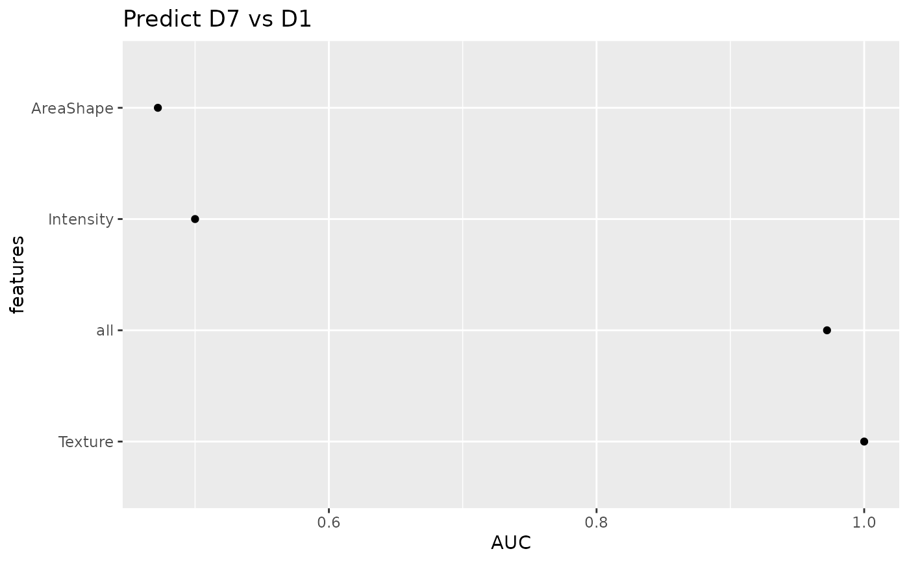

Plot AUC comparison
Usage
plotAUC(
sce,
assay_type = "tfmfeatures",
meta_vars = c("Patient", "Treatment"),
target = "Treatment"
)Arguments
- sce
A
SingleCellExperimentobject- assay_type
A string specifying the assay
- meta_vars
a vector of variables from `colData`
- target
Name of target variable for prediction
Value
ggplot2 object
Examples
set.seed(23)
cell_file <- generate_data()
sce <- loadData(cell_file)
sce <- transformLogScale(sce)
sce$Drug <- as.factor(sce$Drug)
sce$Drug <- relevel(sce$Drug, ref = "D1")
types <- c("AreaShape", "Intensity", "Texture")
sce_single <- predictLOO(
sce,
target = "Drug", group = "Patient",
interest_level = "D7", reference_level = "D1",
types = types,
n_threads = 1
)
plotAUC(sce_single, meta_vars = c("Patient", "Drug"), target = "Drug")
